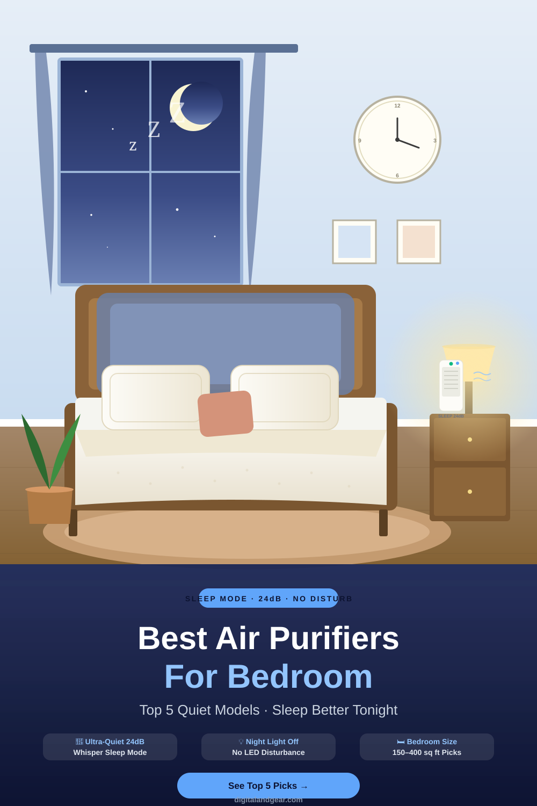
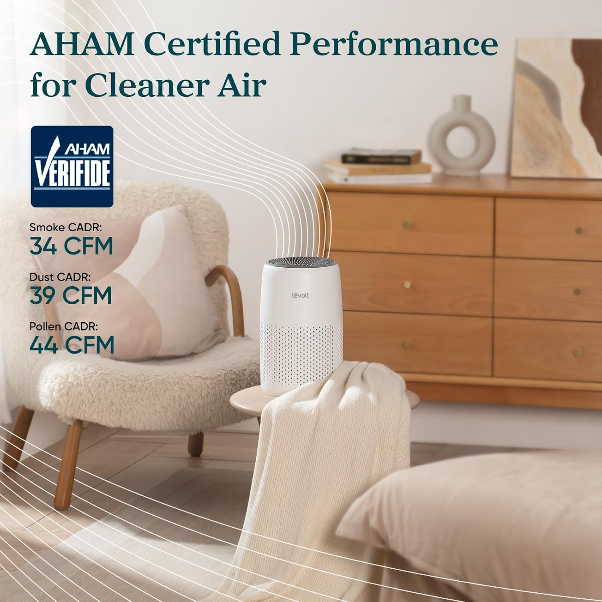
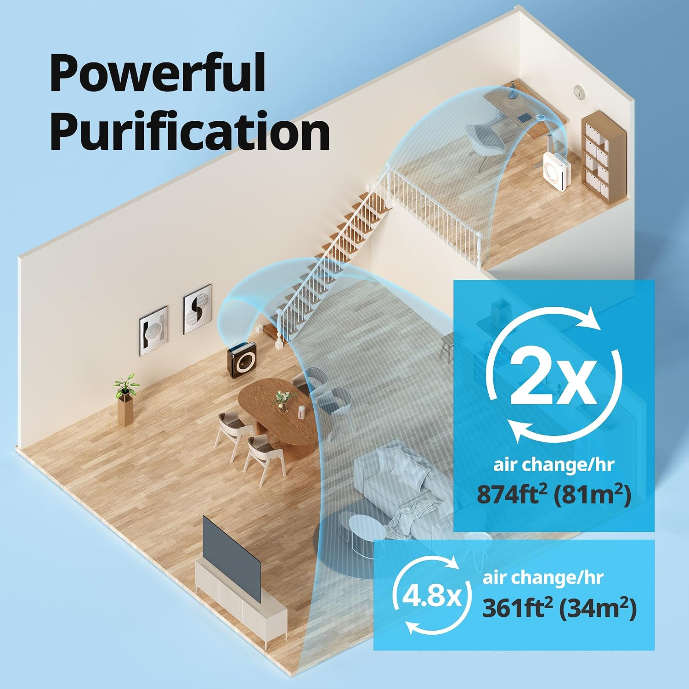
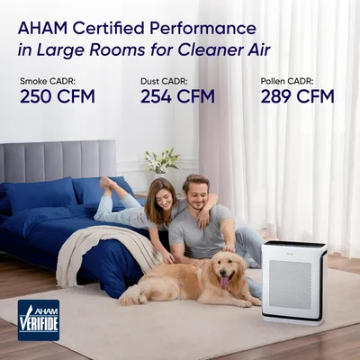

Quiet models with sleep mode, low noise operation and True HEPA filtration for cleaner air while you sleep.

A bedroom air purifier needs to do more than just clean the air. It needs to run quietly enough to let you sleep through the night, while effectively removing allergens, dust and airborne particles that can affect your sleep quality.
In this guide, we compare the top-rated bedroom air purifiers of 2026, focusing on noise levels, sleep mode features, filtration performance and value for money.
Whether you have allergies, share a room with a partner, or simply want fresher air at night, our picks below are designed to work without disturbing your rest.
Compare the key specs side by side before diving into full reviews. Prices updated August 2026.
| Product | Price | Noise (dB) | Room Size | Filtration | Best For |
|---|---|---|---|---|---|
|
LEVOIT Core 300
Best Overall Value
|
$99.99 | 24 dB | 219 sq ft | True HEPA H13 | Budget bedrooms |
|
Coway Airmega AP-1512HH
Best For Allergies
|
$229.00 | 22.8 dB | 361 sq ft | True HEPA + Carbon | Allergy sufferers |
|
Winix 5500-2
Best Mid-Range
|
$159.99 | 27 dB | 360 sq ft | True HEPA + PlasmaWave | Medium bedrooms |
Prices verified on Amazon as of August 2026. May include affiliate commissions.
These three air purifiers stood out in our bedroom testing for their quiet operation, effective filtration and bedroom-friendly features.

Best Overall Value

Best For Allergies

Best Smart Bedroom Model
Choosing the right bedroom air purifier means balancing several key factors. Use these four areas to compare models before buying.
The most important factor for a bedroom air purifier is how quiet it runs. Even a slightly loud unit can disrupt light sleep or wake a partner during the night.
All three of our top picks run below 25dB on their quietest settings, which is roughly the sound of soft breathing or a quiet library.
A purifier that is too small for your bedroom will run on high fan speed all night, making more noise and cleaning less effectively.
The general rule is that your air purifier should be able to change the air in your room at least 4-5 times per hour.
Bedrooms collect dust mites, pet dander, pollen and dead skin cells. A True HEPA filter is the most reliable technology for capturing these microscopic particles.
For allergy sufferers, look for sealed filter systems that prevent unfiltered air from leaking around the filter edges.
Where you place your air purifier in the bedroom affects both how well it cleans and how quietly it operates.
Most people find that a corner location, 3-6 feet from the bed, gives the best combination of quiet operation and effective air circulation.
Yes, and most bedroom users run their purifiers continuously through the night. Modern air purifiers are designed for 24/7 operation and use very little electricity on low settings. A typical bedroom unit costs only a few dollars per month to run. Just make sure to use sleep mode to dim the display lights.
The best location is usually a corner or near the bedroom door, at least 1-2 feet from walls, furniture and your bed. This allows unobstructed airflow while keeping the unit far enough that the gentle breeze doesn't disturb sleep. Avoid placing it behind curtains or under furniture where vents can be blocked.
Absolutely. Sleep mode does two important things: it drops the fan to the lowest (quietest) speed, and it dims or turns off all LED indicator lights. Combined, this creates a much more sleep-friendly environment. Many users report they cannot hear their purifier at all on sleep mode, even from a few feet away.
Compare our top three bedroom air purifiers side by side, read our full in-depth reviews, and check today's best prices on Amazon before you buy.
Digital & Gear participates in affiliate programs. We may earn a commission when you purchase through links on our website.
Our recommendations are based on product research, features, specifications and customer feedback.